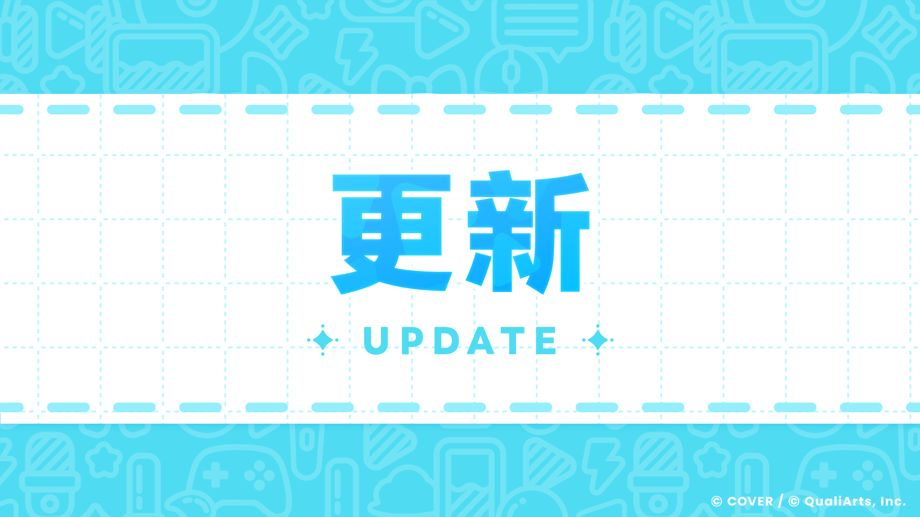
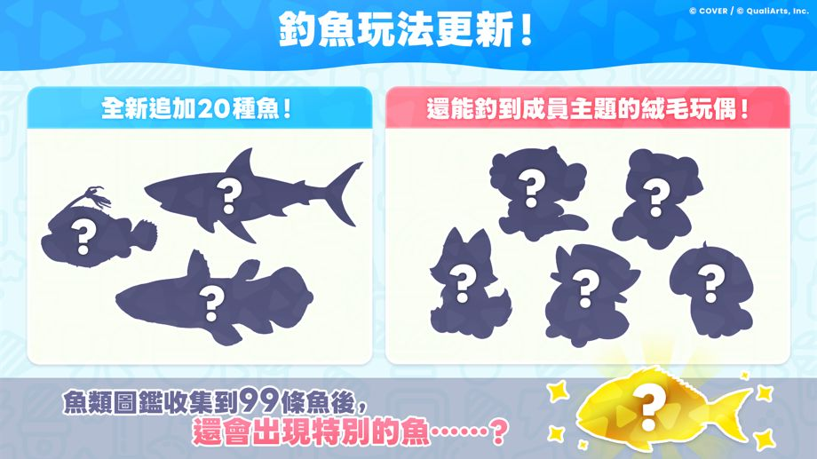
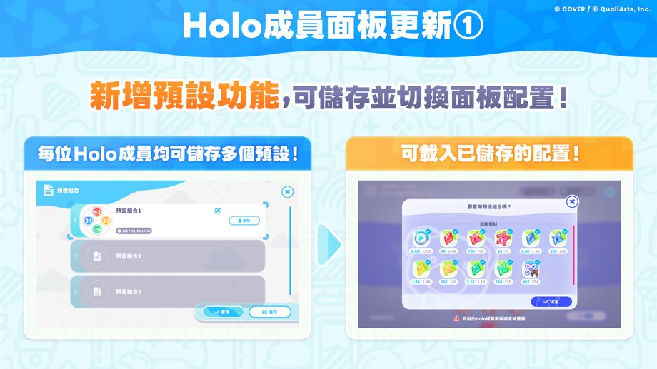
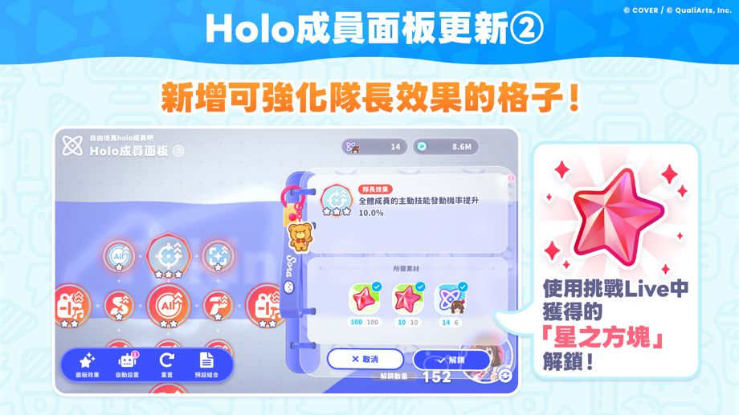

感謝各位玩家的熱烈支持。
我們是「hololive Dreams」營運團隊。
2026-11-25 11:00:00已更新至Ver.1.3.0。
全新小遊戲「漂漂大亂鬥」登場

自2026-11-25 11:00:00起，全新小遊戲「漂漂大亂鬥」登場！
「漂漂大亂鬥」是在水上浮台讓對手落水的策略遊戲。
靈活運用我方holo成員與成為我方夥伴的對方holo成員，在遊戲中取得優勢吧。
在單人遊玩模式中，與各holo成員對戰，或在多人遊玩模式中，與其他玩家對戰吧。
全新內容「挑戰Live」登場

自2026-11-25 11:00:00起，全新內容「挑戰Live」登場！
「挑戰Live」，是挑戰各舞台所設定的目標分數的全新Live玩法。
可用於Holo成員面板新增欄位的新素材「星形方塊」，也將於過關舞台的獎勵中登場。
善用各舞台設定的加成成員，即可一路前進至最高的「舞台100層」。
其他更新內容
◆釣魚更新

- 新增20種全新魚種，以及解鎖釣魚圖鑑的達成獎勵。
-
同時也可在Bae’s 雜貨小舖獲得魚餌「橘子」、「軟糖」與「星型練餌」。
過關汽水泡泡灣的主線關卡，即可解鎖「橘子」與「軟糖」。釣起99種魚，則可解鎖「星型練餌」。
◆Holo成員面板更新

-
「各holo成員的Holo成員面板預設組合功能」
已新增預設組合功能，使每位holo成員皆可儲存多組Holo成員面板組合，並進行套用。

-
「新增需使用新素材的欄位」
已在Holo成員面板中新增強化隊長效果的欄位。
需遊玩挑戰Live獲得「星形方塊」，才可解鎖新增欄位。
◆優化Live與更新
- 在已累積Live能量的情況下，仍可選擇不消耗能量遊玩Live。
- 大量回復Live能量時，已調整為會先跳出確認對話框。
- 已改善在Live能量回復畫面中，按下「<<」與「>>」時，回復數量會依階段停在0、10、20與99。
- 已改善選曲畫面與評級畫面的切換。
◆其他更新內容
-
「可一鍵綻放多名成員的功能」
可使用「專用綻放Pt」，一鍵綻放所有可綻放的成員。 -
「在綻放成員選擇畫面中新增『使用綻放石』勾選框」
勾選後，將會顯示可使用「綻放石」進行綻放的成員。 -
「在綻放畫面中新增『使用綻放石』的勾選框」
勾選後，也會使用「綻放石」進行綻放。
※未持有「綻放石」時，不會顯示勾選框。
※將優先消耗「專用綻放Pt」。 -
「可透過Holowork獲得電玩巨蛋城硬幣」
透過Holowork的「收錄」與「聊天直播」也可獲得電玩巨蛋城硬幣。 -
「使用綻放石時，顯示確認對話框」
使用綻放石時，將顯示確認對話框。 -
「在成員詳情畫面中，可僅顯示成員的基礎能力」
可選擇僅顯示不含Holo成員面板等加成效果的基礎能力。 -
「可從Holo成員關卡移動至holo成員附近」
已可從Holo成員關卡畫面的holo成員圖示，移動至該成員的附近。 -
「可分項設定個人檔案公開範圍」
已可針對各項目設定為「公開」、「非公開」或「僅限好友可見」。
◆其他調整與異常修正
-
已調整可在holo之家領取的禮物。
已調整為無論星期幾，領取的禮物皆為「Holo獎牌」。 -
現在可以在汽水泡泡灣的「一條VIP會所」轉換特訓道具的顏色。
消耗汽水泡泡硬幣，即可將碎片及水晶兌換成其他顏色的道具。
※過關主線關卡3章「汽水泡泡灣」後解鎖。 - 已調整協奏花園中部分隱藏寶箱的出現位置。
-
已調整Holo成員面板的部分圖示
對象：「主動技能發動機率提升」、「分數支援效果」 - 已調整部分holo成員的Live服裝表情與色調等。
- 已改善樂園掉落物的撿拾操作。
- 已修正各種小遊戲的輕微異常。
- 已修正其他輕微異常。